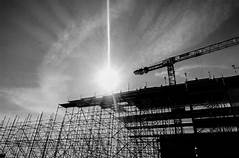

What is a construction site?
construction site is an area or piece of
land where construction work is taking place. Sometimes construction
sites are referred to as ‘building sites’. This usually implies that
buildings or houses are being constructed, whereas ‘construction site’
covers a wider scope of work. This could refer to anything from a house
extension to a landscaping project, road or bridge construction or a
huge engineering project, such as the Crossrail development or the
creation of a new power station. Construction sites Land is generally
classed as a ‘construction site’ when it’s handed over to contractors to
begin work. Across a construction site, multiple activities often take
place at different times, under the same plan.
